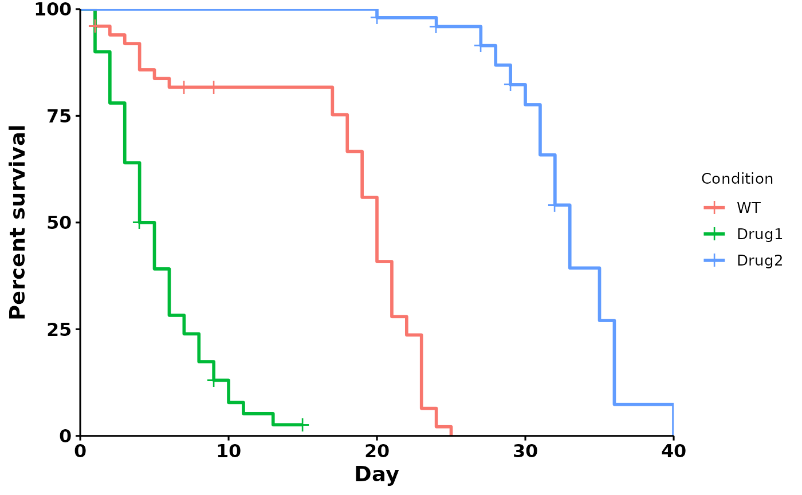

basic-plot.RmdYou should have 4 columns of data that look like this:
| condition | day | dead | censored |
|---|---|---|---|
| WT | 10 | 2 | 0 |
| WT | 12 | 0 | 1 |
| … | … | … | … |
# This is a fictional dataset that is bundled with the package, and is used
# for the purposes of this tutorial
data(sample_data)
dat <- sample_data
head(dat) # see the first few rows
#> X condition day dead censored sex
#> 1 1 WT 0 0 0 M
#> 2 2 WT 1 2 1 M
#> 3 3 WT 2 1 0 M
#> 4 4 WT 3 1 0 M
#> 5 5 WT 4 3 0 M
#> 6 6 WT 5 1 0 MTo import your own data, do the following:
csv file (eg:
your-csv-file.csv). Note that all your conditions must be
in the same sheet.csv file.csv file
into R.dat <- read.csv("your-csv-file.csv")
head(dat) # see the first few rowsWhat conditions are present?
unique(dat$condition)
#> [1] "WT" "Drug1" "Drug2"run_bulksurv() plots a survival curve, and outputs
median survival, log-rank test and pairwise log-rank test
statistics:
p <- run_bulksurv(dat) # Default: survival curve
#> Joining with `by = join_by(x, condition, day, sex, status)`
#> call: formula = Surv(day, status) ~ condition
Use type = "mortality" for a mortality curve:
p <- run_bulksurv(dat,
print_stats = FALSE,
type = "mortality")
#> Joining with `by = join_by(x, condition, day, sex, status)`
#> call: formula = Surv(day, status) ~ condition